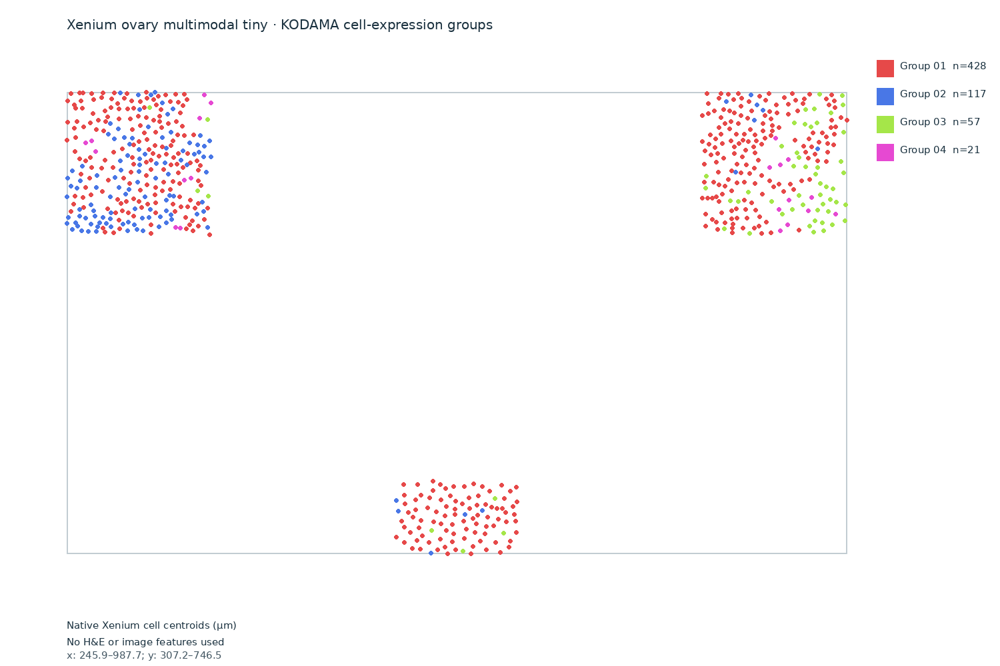
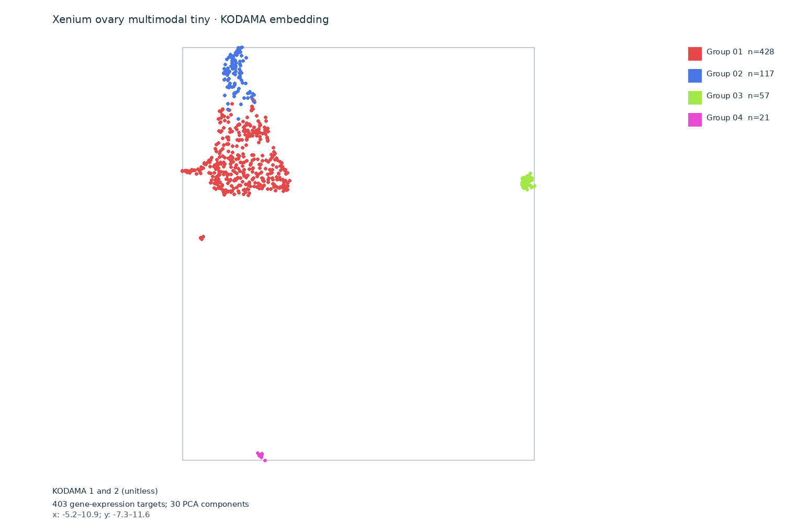
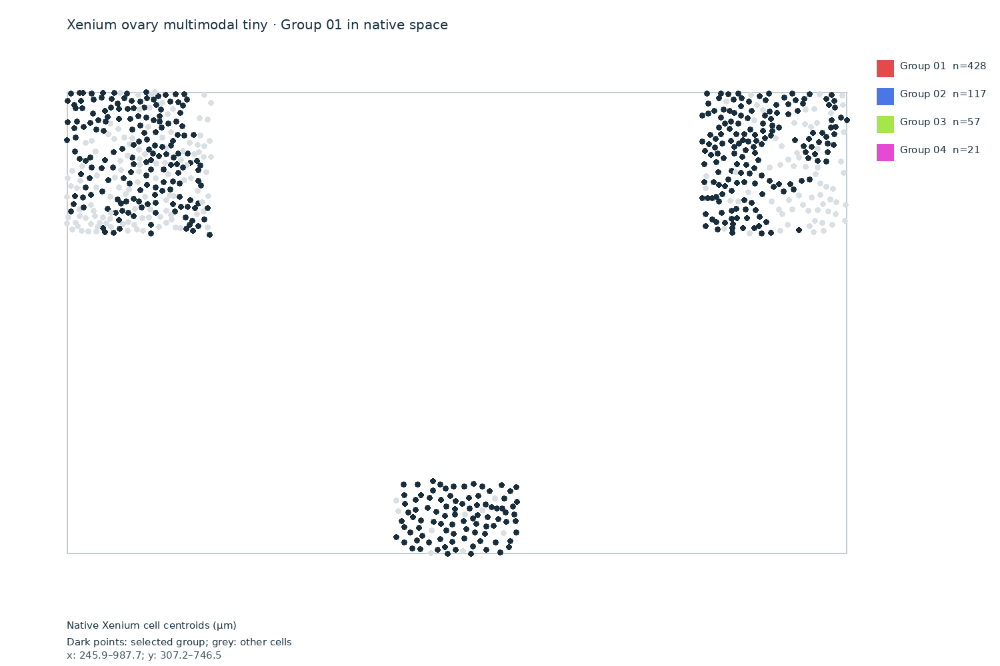
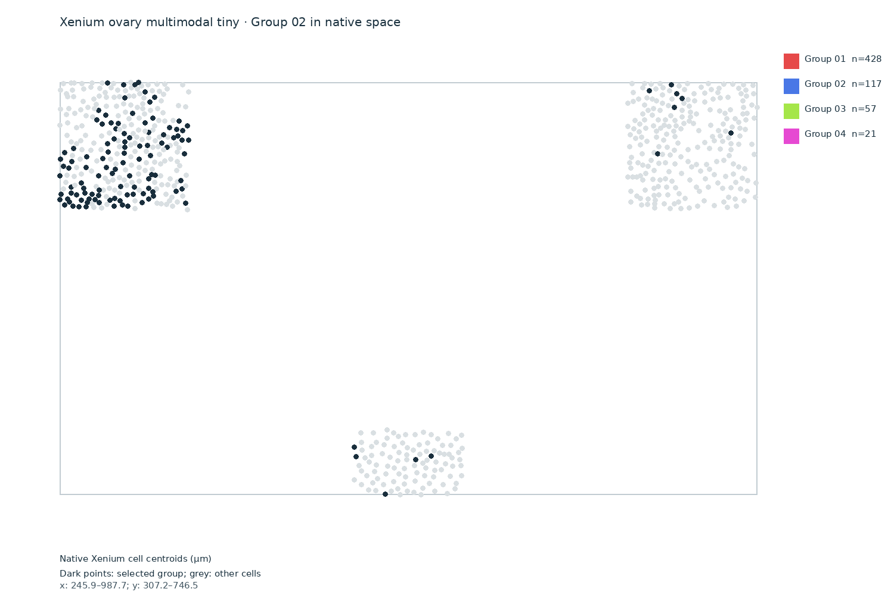
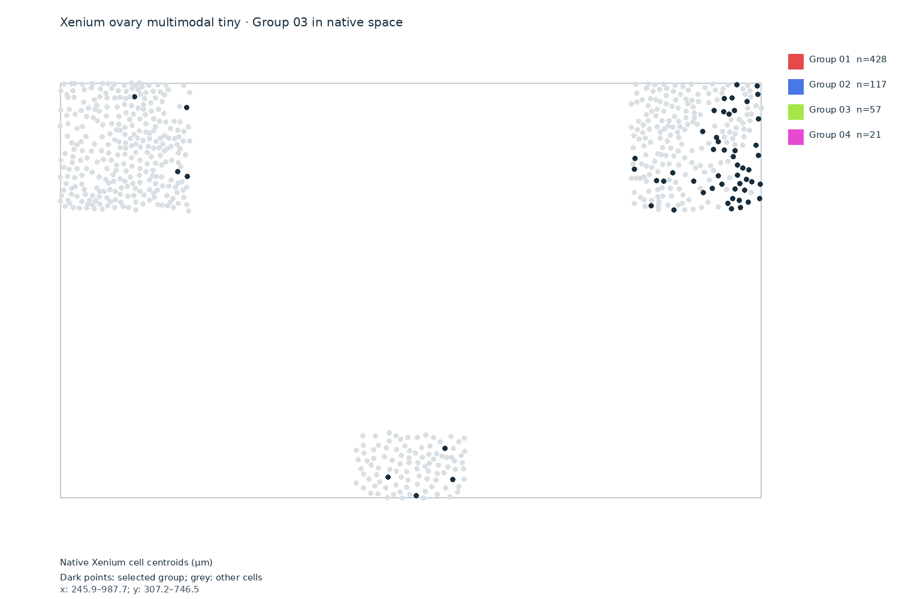
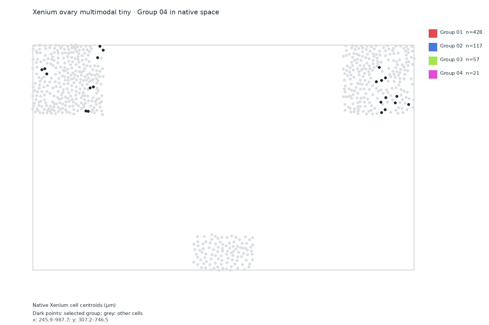

Native spatial groups
These are the source Xenium cell centroids in micrometres. KODAMA and Leiden used gene expression only; coordinates were used to display the groups. All 623 source cells had positive gene counts.


Interpretation: This is a tiny demonstration subset. Four anonymous groups are exploratory and cannot establish cell types, pathology labels, H&E classes or Bora polygon segmentation. The small sample limits biological interpretation. This and the nuclear-expansion tiny result share the same source morphology image but use different cell segmentations, so they are not independent biological samples.
Inspect each group




Download and provenance
Download cell coordinates, counts and group labels
Verified analysis provenance · 10x Genomics example datasets
Input: official Xenium human ovary multimodal segmentation tiny output, 623 native cells, 403 measured gene-expression features. Analysis: pinned KODAMA 0.99.7, 30 gene-expression principal components, 15-neighbor graph, Leiden resolution 0.25. The complete native source and reusable input matrix are retained locally.